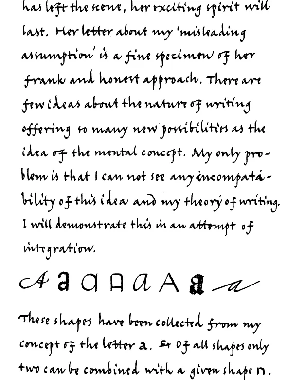
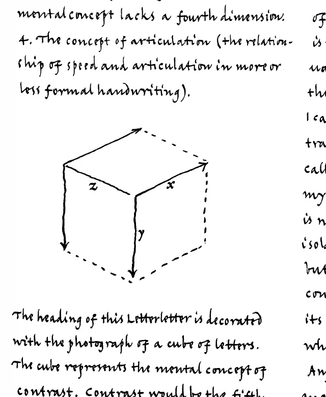

Типографика медлительна. Скорость наборных машин может быть какой угодно высокой, но всё остальное в типографском процессе — дело хлопотное и неспешное. С рукописью приходится иметь дело людям, вовсе не разбирающимся в её содержании, а значит, текст нужно готовить особенно тщательно. Его требуется разметить так, чтобы он уместился на отведённых страницах, вычитать корректуру, внести правки, свести полосы. И ещё до того, как рукопись доходит до первой стадии собственно типографского набора, очередной номер LetterLetter уже уходит в печать — в виде факсимиле. Тираж просто-напросто склеивают вручную и закрывают выпуск, когда место на странице заканчивается. Такой способ удобен редактору, экономен издателю и полезен читателю: тот невольно расширяет своё понимание письма, учась видеть в типографике продолжение руки. Потрудившись, он даже поймёт, отчего Николет Грей (Nicolete Gray) ввела в оборот понятие «ментальный образ буквы». Пусть ему и не вполне удастся сродниться с рукописным письмом — но само это неполное понимание окажется важным уроком для всякого, кто имеет касательство к дизайну и производству письма.
У четвёртого номера LetterLetter есть ещё одна причина явиться в виде факсимиле. Сердцевина этого выпуска — работа Николет Грей, первой дамы ATypI. Она показала, сколь широко можно трактовать «ментальный образ буквы», подобрав удачные примеры почерка, — но подлинным доказательством того, что перед нами не отвлечённая доктрина, а живое и чуткое свидетельство гибкого взгляда на вещи, служит именно её собственноручная рукопись.
Николет при этом критикует третий номер LetterLetter, а заодно и манифест Фернана Бодена (Fernand Baudin) «Printing & the hand of man». Фернан не остался в долгу и воспользовался случаем изложить свою позицию — и этот его «боевой клич» тоже воспроизведён здесь факсимильно.
Издатель: ATypI., п/я 611, CH-4142 Мюнхенштайн
Редактор: Геррит Ноордзей (Gerrit Noordzij), Лангстраат 11, NL 4176 Тёйл
Фернан Боден собственноручно
Редактору «Letter-Letter»
На самом деле я никогда не полагал, что понятие «буква» заключено исключительно в акте письма от руки — это прежде всего. Во-вторых, Николет совершенно права в том, что она говорит о ментальных образах и восприятии — точно так же, как правы многочисленные «просветители», обеспокоенные сегодня грамотностью и безграмотностью. И всё же мой проект называется PRINTING & THE HAND OF MAN («Печать и рука человека»), а не «Печать и рукописное письмо» или как-то иначе, потому что моя цель — убедить ATypI. (то есть Совет директоров и Генеральную ассамблею) «организовывать различные мероприятия… которые способствовали бы развитию у публики критического понимания типографики» (Устав, ст. 2). Как я неоднократно говорил, этого можно добиться, приучая публику замечать буквенные формы в их повседневном окружении — а вместе с тем и людей, стоящих за ними, и те технологии, которые со времён пишущей машинки, наборных машин и компьютера заслонили простой факт: даже сегодня буквенные формы рождаются не только из глаза и разума человека, но и из его руки.
Множество организаций, государственных и частных, борются с безграмотностью — каждая в своей сфере и в своём контексте. Это наши потенциальные союзники. Моё предложение — включить их в круг той публики, к которой мы обращаемся, и развивать прежде всего именно их критическое понимание типографики. Моё предложение — лишь одно из нескольких, и я имею в виду в рамках самой ATypI. Правда, при том, что подобные вопросы обсуждаются лишь раз в год, едва ли можно рассчитывать на скорый прогресс хоть в одном из них.
ФБ
26 апреля '86
Николет Грей: Ментальная концепция
Я прочла ваш третий Letter Letter и отчёт о гамбургской дискуссии — на которую, к сожалению, не смогла попасть. Хочу высказать одно соображение. Несомненно, первый вопрос, который нужно решить, обращаясь к проблемам безграмотности и обучения письму, — это вопрос о том, что вообще значит слово «буква». Восприятие — существенная часть проблемы, но нужно ясно понимать, что именно мы воспринимаем.
Проект Фернана называется «Печать и рука человека». Геррит спрашивает: «Что такое письмо?» Оба подхода исходят из того, что понятие «буква» заключено в самом акте рукописного письма. Мне это представляется произвольным и вводящим в заблуждение допущением. В конечном счёте идея каждой буквы — это понятие, существующее в человеческом сознании. Именно благодаря этому ментальному понятию мы способны писать и проектировать буквы, а также узнавать их при чтении.
Но, как всем известно, конкретная форма любой буквы варьируется весьма значительно — и не только в зависимости от того, каким пером она написана, но и от ограничений и возможностей других способов создания букв: отливки в металле, генерации на компьютере и так далее. Ментальная концепция не точна — она гибка, даже переменчива, — и всё же за каждой буквой стоит идентичность, некий набор признаков, без которых не обойтись. Возьмём строчные буквы: «g» непременно должна иметь замкнутое очко
и нисходящий хвост, — но хвост этот может быть прямым g, а может изогнутым g, и может начинаться сверху от очка (но только справа) g, а может — снизу g. У «f» должен быть вертикальный штамб, заканчивающийся крюком вправо, и обязательная поперечная перекладина — f, — но штамб может быть продлён вниз в виде спуска, и любая (либо обе) из этих частей может завиваться петлёй f или украшаться росчерком f. Чтобы определить идентичность буквы, нам нужно установить, каковы её существенные признаки. Технические новшества нашего времени делают эту задачу неотложной. (Каковы существенные признаки буквы «r» или «г» — и почему не «ʀ»?)
У нас есть наглядный пример того, к чему приводит путаница в мышлении, — в современном преподавании письма в британских школах. Здесь исходят из того, что шрифты-гротески XX века дают образец правильной и точной формы каждой буквы. Детей учат одновременно читать и писать именно эти формы: в итоге их штрихи-выносные едва превышают высоту строчных букв. Соединительные штрихи не входят в изучаемую форму — их могут добавить позже, а могут и не добавить. Поэтому буквы очень часто пишутся вплотную друг к другу, без всякого промежутка. Результат — превращение чёткого, функционального шрифта в неразборчивый почерк.
Чтобы читать, нам достаточно уметь узнавать идентичность буквы по её существенным признакам. Чтобы писать или проектировать буквы, к этому нужно добавить понимание особых свойств и требований того инструмента, которым пользуешься.
Терминология
Недавно я побывал на встрече преподавателей, организованной Институтом образования Лондонского университета. Там мне попалась любопытная статья одного психолога-педагога. В ней слово «сериф» (serif) использовалось в значении «соединительный штрих»! Этот простой пример расхождения в трактовке ключевого термина ясно показывает, насколько нужно сотрудничество.
Базель — 12 сентября 1986
8.00–9.30 — Ежегодное заседание Комитета по образованию и исследованиям, отель Interational
Предварительная повестка
- Избрание председателя.
- Седьмой рабочий семинар.
- Координация национальных усилий по реформе образования.
- Letterletter.
- Разное.
- Ментальная концепция письма. Дискуссия с Николет Грей о дизайне и исследованиях.
Предложения по окончательной повестке следует направлять председателю Комитета.
По пунктам
- Кандидатуры должны быть выдвинуты на самом заседании.
- Новой информации со времени предложения, сделанного Романом Томашевски (Roman Tomaszewski) в Киле, не поступало.
- Исландия, Фризия (Нидерланды), Франция, Венгрия (и, вероятно, другие страны) рассматривают новый подход к обучению письму (чтению и рукописи) на разных этапах. Переписка между Фризией и Исландией, судя по всему, оказывается плодотворной для обеих сторон. Не мог бы Комитет предоставить центральный адрес для такой международной переписки?
- Letterletter — издание научное, полемическое и очень голландское. Кто хотел бы подготовить альтернативный выпуск?
- Мне хотелось бы отвести этой принципиальной дискуссии как можно больше времени. Расписание заседаний Комитета позволяет участвовать всем дизайнерам. Тема дискуссии уже подготовлена предложениями Фернана Бодена и материалами третьего и четвёртого номеров Letterletter. В ходе обсуждения мы могли бы в полной мере воспользоваться участием Николет Грей.
Letterletter издаётся A.Typ.I., п/я 611, 4142 Мюнхенштайн, Швейцария. Редактор: Геррит Ноордзей, Лангстраат 11, 4176 BC Тёйл, Нидерланды.
Измерения ментального образа и его происхождение
Николет Грей — один из самых самобытных и вдохновляющих людей, каких я знаю. Ей присуще редкое достоинство — позволять другим вырабатывать собственный взгляд на вещи. Введите её в компанию робких студентов, и вы почти сразу увидите, как меняется вся атмосфера. Каждый почувствует себя вправе без страха высказать собственное мнение. Те, кто знает студентов, поймут, что это незаурядное достижение. Когда Николет давно покинет сцену, её живой дух будет жить ещё долго. Её письмо о моём «вводящем в заблуждение допущении» — прекрасный образец её прямоты и честности. Немного найдётся идей о природе письма, которые открывали бы столько новых возможностей, сколько идея ментальной концепции. Единственная моя трудность в том, что я не вижу никакого противоречия между этой идеей и собственной теорией письма. Я попытаюсь это показать, предприняв попытку их объединить.

Эти формы собраны мной из моего представления о букве «a». Из всех этих форм лишь две сочетаются с заданной формой «n».
na na
а если задана форма «g», остаётся только один возможный вариант «a».
nag
В своих примерах ментальной концепции буквы «g» Николет Грей рассматривает только курсивное письмо от руки и итальянский почерк. Иначе она не исключила бы вариант с началом штриха сверху слева. Точно так же остаются в стороне европейские курсивы семейства «бастарда». Из этого семейства до сих пор жив немецкий «бегущий почерк» (Kurrentschrift), где «g» также начинается сверху слева.
(иллюстрация: слово, написанное готическим курсивом)
Мои шаги в выборе формы «a» указывают на разные уровни ментальной концепции письма:
- Концепция построения (направление и последовательность штрихов).
- Концепция почерка (соотношение форм внутри алфавита).
- Концепция буквы (совокупность форм, представляющих одну букву).
Концепция построения зависит от знания техники письма от руки. Концепции почерка и буквы зависят от понимания рукописного письма — однако это понимание может быть подменено более поверхностным знанием (набором фактов вроде классификации шрифтов вместо подлинной теории письма).
«Малая концепция» (рукописное письмо в некоем итальянском курсивном варианте), которую иллюстрируют примеры Николет, вполне может быть достаточной для начального обучения письму. Это минимальная
концепция, которой владеет любой человек. Но её недостаточно для начального обучения чтению. Ментальная концепция юного читателя должна охватывать все ныне существующие шрифты. Типографам — а тем более шрифтовым дизайнерам — требуется понимание более широкое, но разница между подготовкой специалистов и обучением детей несущественна.
Любой учитель скажет, что дети должны научиться писать быстрым, беглым почерком, — но я не знаю ни одного учителя, который на деле учил бы детей именно в этом смысле. Школа предлагает детям крайне формальный образец и требует копировать его как неформальный почерк. Это ещё один абсурд нашей (западной) системы образования. Ментальной концепции здесь не хватает четвёртого измерения.
- Концепция артикуляции (соотношение скорости и чёткости в более или менее формальном письме).

Заголовок этого номера Letterletter украшен фотографией куба из букв. Куб символизирует ментальную концепцию контраста. Контраст стал бы пятым измерением моего ментального образа, но сам куб трёхмерен. В итоге получается семь измерений ментального образа письма.
Ось z — это диапазон вариаций (по сути, интерполяции) в характере контраста. Отталкиваясь от этой исходной линии, контраст букв можно усиливать в направлении оси x и ослаблять в направлении оси y. Куб получается путём интерполяции плоскости x,z с плоскостью y,z. Это исчерпывающая модель всех возможных вариаций контраста. Любое положение может быть выражено значениями x, y, z. Смысл этого куба — тема для одного из будущих номеров Letterletter.
Такой логический подход к ментальному образу письма расходится с позицией, которую занимает Николет. Я вовсе не пытался особо подчеркнуть роль рукописного письма — оно просто присутствует как первое условие письма вообще. Я могу выделить шрифт с уменьшенным контрастом (который принято — и крайне неточно — называть «гротеском») из нижней части своего куба и пользоваться им независимо, но понять его в этой изоляции невозможно. Это не самостоятельное понятие, а результат предельного уменьшения контраста. Чтобы его понять, мне нужно проследить его развитие в обратном направлении — это вернёт меня к оси z. Любую форму на оси z можно разложить на некоторое число «дорожек противоходов» (см. Letterletter 1 и 2). Чтобы выразить это в простых словах:
ось z — это диапазон вариаций самого рукописного письма. Именно вдоль этой оси «понятие "буква" заключено внутри деятельности письма от руки», как выражается Николет. Возможно, это происхождение любого письма — «произвольный» факт, но это факт, лежащий у истока письма. Его признание обязательно, и это вовсе не «произвольное и вводящее в заблуждение допущение».
Я не располагаю достаточным знанием о том, как зародилось письмо (да и никто не располагает), чтобы указать на этот факт с полной уверенностью. Однако в пределах, доступных моему ограниченному разуму, альтернативы этому нет. Эти пределы обретают осязаемую форму в моей кубической вселенной контраста. Из всех рёбер куба лишь одно мыслимо в качестве истока — ось z. Любой самый примитивный компьютер способен вычислить любую форму внутри куба, если задана эта ось, но даже самый одарённый дизайнер никогда не смог бы вывести весь куб, оттолкнувшись от какого-то другого ребра.
Теперь, полагаю, должно быть достаточно ясно, что «заключено внутри деятельности рукописного письма» не моё понятие письма как таковое, а именно его происхождение. Для Николет это должно составлять разницу. Моё понятие письма — это и не понятие о буквах: это, скорее, ментальное понятие о совокупностях. Эти совокупности не учитывают отклонений отдельных писцов и дизайнеров (веская причина не говорить здесь ничего о засечках). Включение личных тонкостей взорвало бы саму структуру ментального образа — но проще всего сказать, почему я их не учитываю: я рассматриваю условность — то общее, что есть у всех пишущих, — и то, чему вообще можно научить. В этой цели нет ничего личного.
Не всё в моей теории письма столь же осязаемо, как куб контраста, — хотя всё в ней может быть достаточно точным, чтобы выдержать научную проверку. Есть, однако, одна серьёзная трудность: моя теория противоречит учению Стэнли Морисона (Stanley Morison), Яна Чихольда (Jan Tschichold) и прочих гуру письма. И всё же моё дело — объяснять принципы письма и спасать его подлинные явления. Спасать чьи-то заслуженные репутации — не моя задача.
Вот уже пятнадцать лет Николет Грей остаётся моим самым верным оппонентом. Этот номер Letterletter — ещё одно свидетельство того, как многим я обязан её критике, — и всё же я по-прежнему не в силах до конца её понять. Даже такой, казалось бы, простой вопрос, как левое заднее ребро куба — взаимозависимость Баскервиля и Гельветики, — так и не удалось разрешить в нашей дискуссии с нашей загадочной первой дамой.
Не кроется ли наше глубинное разногласие в различии самой «космологии»? Тогда мы окажемся всего лишь актёрами в нескончаемой пьесе — вечном споре романтика с маньеристом.